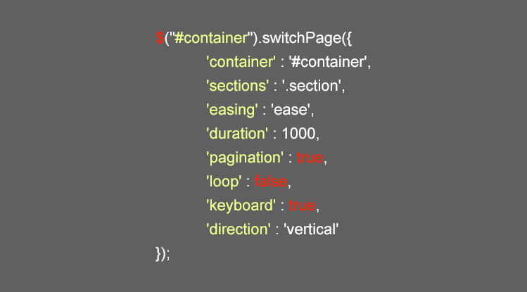
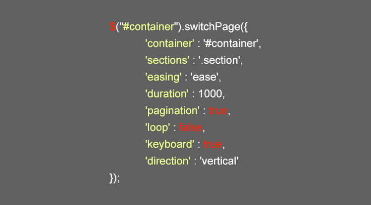

switchPage
Create Beautiful Fullscreen Scrolling Websites
Example
HTML markup example to define 4 sections

Example
The plug-in configuration parameters
The End
Everything will be okay in the end. If it's not okay, it's not the end.
Create Beautiful Fullscreen Scrolling Websites
HTML markup example to define 4 sections
The plug-in configuration parameters
Everything will be okay in the end. If it's not okay, it's not the end.